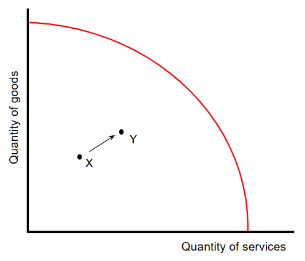
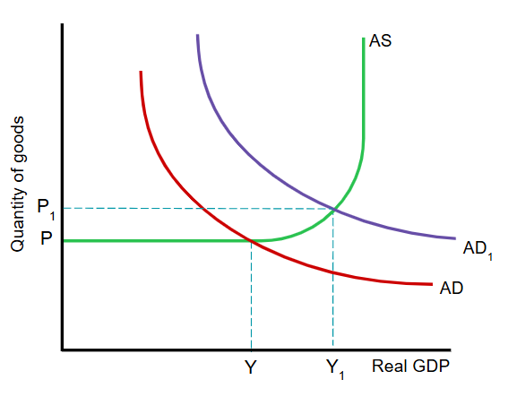
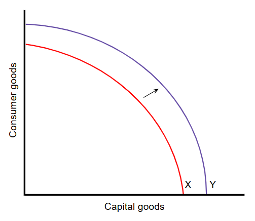
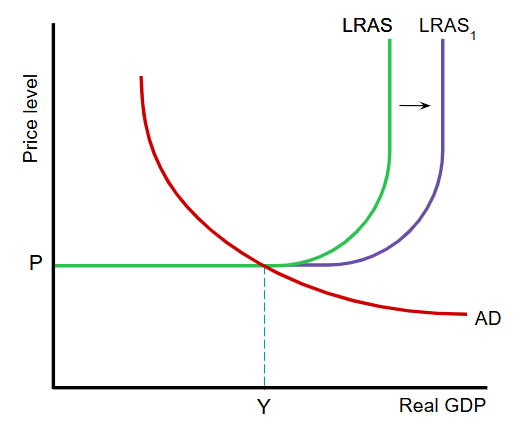
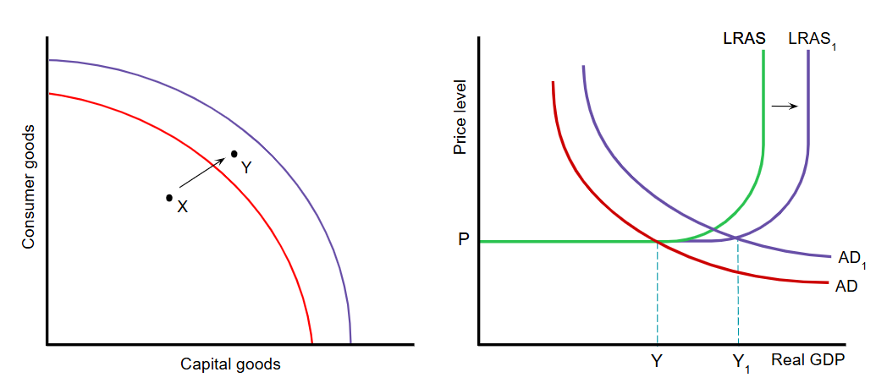
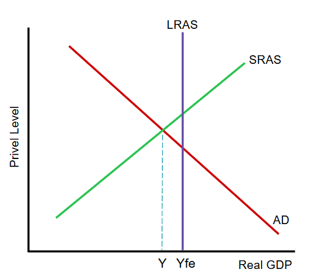
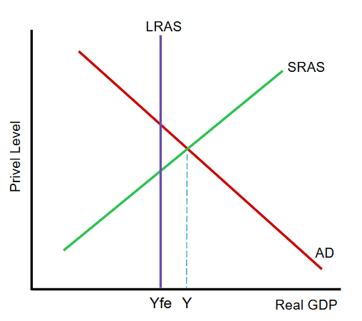
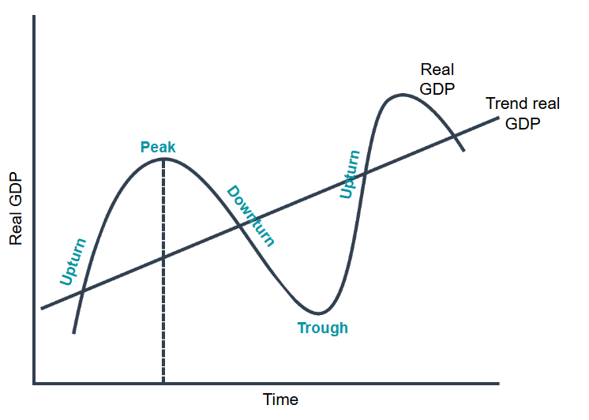

Actual economic growth occurs when output increases. It is sometimes referred to as the short run economic growth.
This can be achieved as the result of greater utilisationof existing resources.
This graph uses a PPC to show economic growth resulting from greater use of existing resources. The economy was initially producing at point X. Then the production point increases to point Y and more goods and services are provided.

Actual economic growth can also be shown using an AD/AS diagram.
This graph shows an increase in aggregate demand in an economy with space capacity. The increase in aggregate demand brings into use previously unemployed resources, which increases output from Y to Y1.

Potential economic growth is the increase in productive capacity of the economy. It is sometimes called long-run economic growth.
This graph uses a PPC to show an increase in the productive capacity of an economy. The initial capacity was at curve X, and then it increase to curve Y.

This shows potential economic growth using an AD/AS diagram.
The long-run aggregate supply increases from LRAS to LRAS1.
The following graphs show both actual and potential economic growth:

The difference between the actual and potential output is known is the output gap.

This figure shows a negative output gap of Y to Yfe.
A negative output gap is caused by a lack of aggregate demand. When there is a negative output gap there will be unemployed resources and the economy will not be producing the full amount it is capable of producing (Yfe).

When an economy is producing more than its maximum potential, a positive output gap occurs.
This figure shows a positive output gap of Yfe to Y.
A positive output gap is possible because in response to high aggregate demand, machinery may be worked continuously, without maintenance being undertaken, and workers may be persuaded to work long hours of overtime. However this cannot be sustained since at some point machines have to be serviced or repaired and workers will want to reduce number of hours they work overtime.
Output gaps arise during the course of a business cycle.
Economies can grow smoothly over time but there can be periods when there are notable fluctuations in real GDP. A country's real GDP can grow at a faster rate than expected and it can experience a slower, or even negative economic growth rate.
The fluctuations in the growth of actual output around the trend growth in productive potential are know as the business cycle. The business cycle is also know as the trade cycle or economic cycle.

This graph is shows a business cycle.
Most countries' economies are expected to grow overtime. Their trend real GDP is expected to rise as each year there are usually improvements in education and advanced in technology.
There are two main causes of why business cycles may occur: fluctuations in aggregate demand and aggregate supply.
There are a number of reasons why fluctuations in aggregate demand may occur: business confidence, money supply, and political cycles.
Large fluctuations in supply are a result of supply side shocks:
Automatic stabilisers offset fluctuations in economic activity. They reduce the rise in GDP during an economic boom and reduce the fall in GDP during a recession.
Automatic stabilisers do this by reducing the growth in aggregate demand during an upturn and economic boom. It also increases the aggregate demand during at least part of a downturn and especially during a recession.
For example, during an economic boom, the fluctuation in GDP can be reduced through progressive income tax and coporate tax rates. During a recession, government spending on welfare benefits can increase the GDP. The rise in tax revenue during an economic boom and rise in government spending during a recession flatten out the business cycle.
Inclusive economic growth is econmic growth that is distributed fairly across society and creates opportunities for all. It enables everyone to benefit from economic growth.
There are two key aspects to "benefits of econmic growth being distributed fairly." One is in monetary terms, with all experiencing a rise in income. The second is in non-monetary terms, with all experiencing an improvement in healthcare, for example.
"Creating opportunities for all" means, for example, generating more job opportunities, creating the opportunity for all workers to experience better working conditions and the opportunity for all to live safely.
Economic growth has created greater equity and a more even distribution of income. In many cases, however, the benefits of economic growth have not always been shared equally or fairly.
Some new industries are created but others dissapear. Those workers who are occupationally or geographically immobile may become unemployed. Economic growth can also be accompanied by a widening of the pay gap. The higher purchasing power went to the owners of capital and cheif executives and not their workers.
In some economies, there may be a rise in jobs and there are more workers in insecure jobs, with few rights and no guranteed working hours. This is called a gig economy.
Sustainable economic growth is economic growth that can continue over time. To achieve this requires a deliberate and determined effort to balance economic, social and environmental objectives.
Social divisions, lack of access to good education/housing/healthcare, and damage to the environment can threated an economy's ability to continue to produce a higher output.
Using natural resources now can increase economic growth, at least in the short run. For example, cutting down trees in a rainforest can increase output and create jobs.
However, there are some arguments for conserving resources. For example, maintaining rainforests and wildlife may encourage tourists to visit the country.
There are many factors that influence the decision to use or conserve resources. One factor is consideratoin of whether demand for the products created by the resources is likely to increase or decrease. If demand is thought to decrease in the future, an argument for using the resources now could be made.
It may be advisable to conserve a resource if the country does not currently have comparative advantage in producing that product, but may have in the future. However, if a country has serious debt, it may feel forced into using its resources now.
Econmic growth can harm the environment and increase the speed of climate change.
Increasing output in the primary factor harms the environment. For instance, keeping more livestock results in the emission of methane gas.
Higher output of manufactured goods can also result in the emission of greenhouse gasses. For example, the burning of fossil fuels to power steel plants.
The growth of the tertiary sector can damage the environment and contribute to globaL warming as well. More tourism, for example, results in more flights, which generates greenhouse gasses.
Consumption of what is produced can also create environmental problems. Higher income results in more shopping and more plastic wrapping thrown away.
Of course, it is possible for econmic growth to improve environmental conditions and reduce the pace of climate change. This would occur if cleaner energy sources are developed and more resources are devoted to, for example, planting trees.
Actual Economic Growth: an increase in real GDP.
Potential Economic Growth: an increase in the productive capacity of the economy.
Output Gap: a gap between actual and potential output.
Negative Output Gap: a situation where actual output is below potential output.
Positive Output Gap: a situation where actual output is above potential output.
Business Cycle: fluctuations in economic activity; also known as the trade cycle.
Depression: a fall in real GDP that lasts several years.
Gig Economy: a labour market based on short-term contracts.
Substainable Economic Growth: economic growth that does not threaten future generations' ability to experience economic growth.
Climate Change: a change in the weather of a region over a period of time.
Greenhouse Gases: carbon dioxide, methane, nitrous oxide.
Global Warming: a rise in the temperature of the world's atmosphere arising from the emission of greenhouse gases.
Polluter Pays Principle: a policy that makes those responsible for causing damage to the environment pay for that damage.